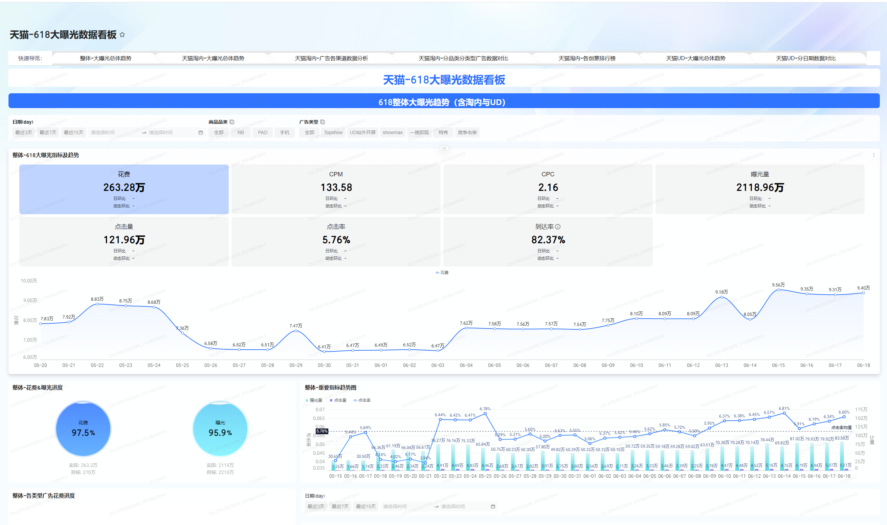
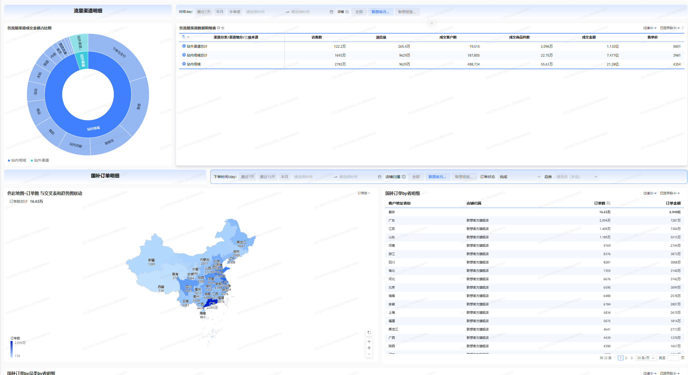
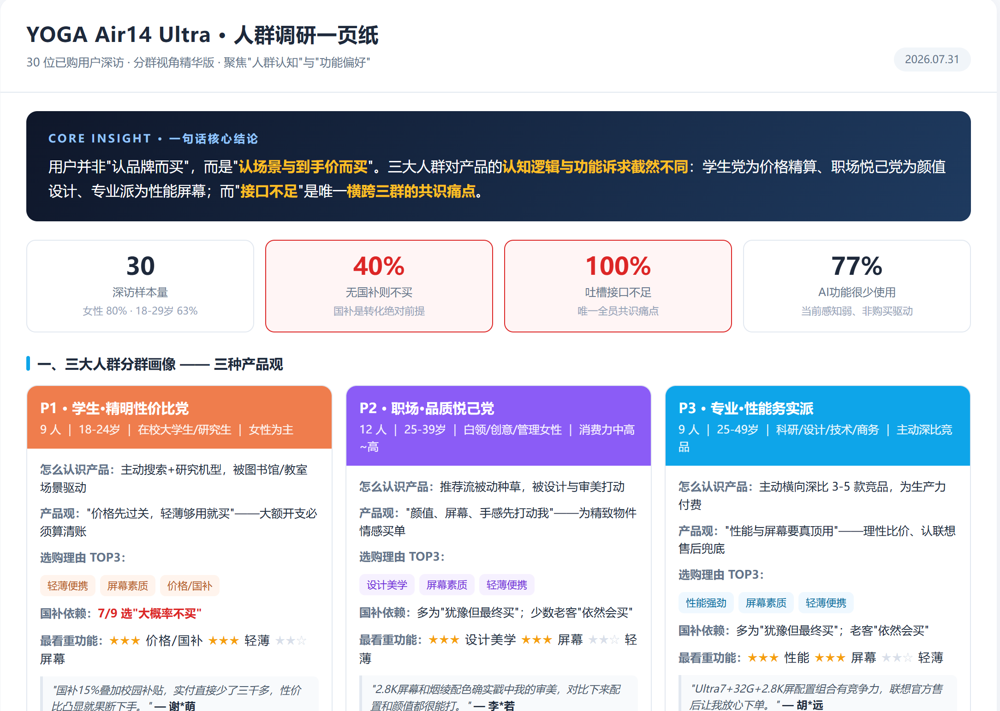
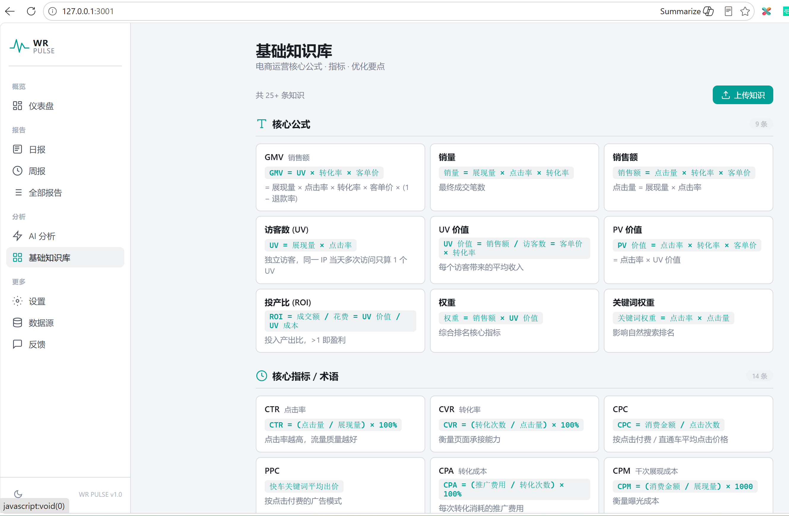
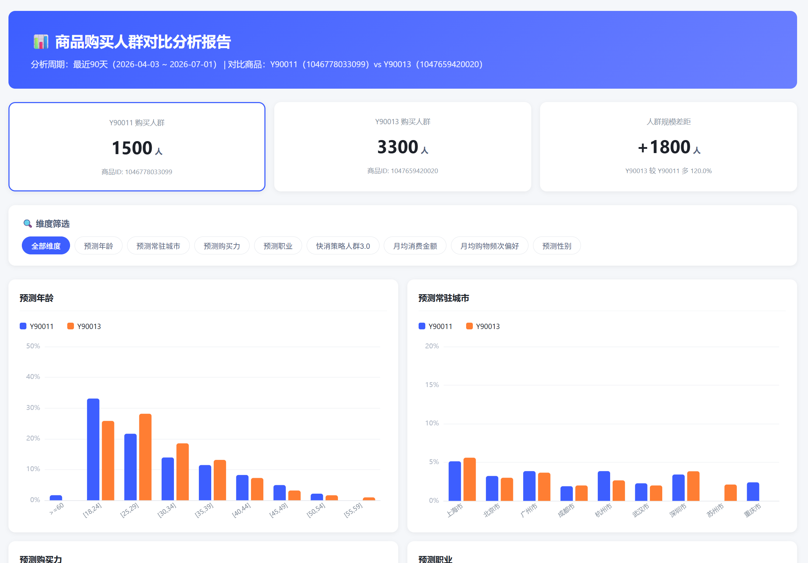
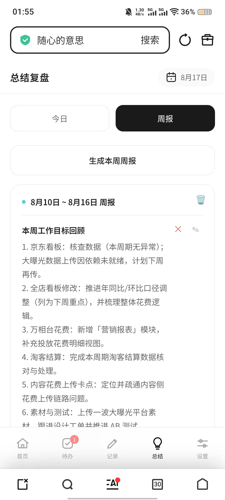

EDUCATION
211 · 保研
城乡规划学 · 硕士
全日制硕士本科
城乡规划学 · 本科
EXPERIENCE
电商运营实习生 · 销售营销部
团队中的数据支撑者：统一直播、万相台、淘客、达播等多渠道数据口径，搭建 BI 看板并沉淀 素材资产库；618 期间跑素材 A/B 赛马，CTR 创历史新高；独立开发浏览器插件把人群分层分析从 1h 压到 2min。
0
累计上线看板
0
独立上线看板
0
大促素材 CTR 提升
0
人群分层分析提效
数据口径统一：把多渠道后台数据按统一口径放到一个页面，解决业务方对不上数的问题。
业务决策支撑：搭建全店驾驶舱、大曝光、淘客 CPS 等看板，让日常看数和大促决策有统一事实基础。
经验资产沉淀：把看板搭建、素材测试、人群分析流程沉淀为 SOP 与知识库，让个人产出变成团队长期资产。
AI 工具自研：针对画像数据取数繁琐痛点，开发浏览器插件实现一键抓取清洗与报告自动生成。
广告 AM 运营 · 程序化广告 BU
负责 Alibaba 海外广告投放数据分析与周报输出。定位美洲超耗问题并输出优化策略，单周超耗从 2728 美元降至 689 美元；用 Python/VBA 实现自动化提效，工作耗时压缩 50%。
$2,039
单周规避结算损失
50%
自动化提效
0 类
标准化 SOP
海外投放分析：负责 Alibaba 海外程序化广告投放数据监控，跟踪 ROAS、CPI、CTR 等核心指标，定位异常并输出调整建议。
超耗管控：发现美洲市场单周超耗问题，通过预算分配与素材调整，将超耗从 $2,728 压到 $689，规避结算损失约 $2,039。
自动化提效：用 Python/VBA 把日报、周报、素材统计等重复工作脚本化，工作耗时整体压缩约 50%。
SOP 沉淀：沉淀素材审核、投放监控、周报输出等 7 类标准化 SOP，帮助新人快速上手并减少出错。
电商运营
负责小红书店铺运营、数据分析与营销活动策划。在职期间日均浏览量增 12%，月 GMV 环比增加 25.07%；官号涨粉 10000+，建联 20+ 达人。
25.07%
月 GMV 环比增长
10,000+
官号涨粉
20+
达人建联
店铺运营：负责小红书店铺日常运营、选品上架与活动策划，通过笔记与活动联动提升日均浏览量 12%。
数据分析：跟踪 GMV、ROI、加购转化等核心指标，定位流量与转化瓶颈，月 GMV 环比增长 25.07%。
内容增长：输出笔记选题与文案，配合账号人设与热点，在职期间官号涨粉 10,000+。
达人建联：筛选、触达并维护 20+ 达人，完成样品寄送与内容排期，提升种草转化效率。
PROJECTS
以研究生阶段的电商/数据/AI 项目为主，本科规划作品集作为补充。

从 0 到 1 搭建 6+ 套自动化看板，覆盖全店、大曝光、淘客、直播、万相台等核心模块，统一数据口径，支撑大促盯盘与周报复盘。

围绕 180w 预算开展两轮素材赛马，覆盖背景色、文案、场景、赠品等 5 个维度，整体 CTR 提升至 5.76%，同比提升 50%+。

自研浏览器插件，一键抓取品牌数据银行人群画像、自动命名并生成 HTML 分析报告，人群分析耗时从 1h 压缩至 2min。

梳理国补政策下的订单分布、流量来源与转化路径，用地图与交叉表帮助业务快速定位高潜省份与低效渠道。

基于 30 位已购用户深访，输出学生党、职场悦己党、专业派三大人群画像，识别「接口不足」为共识痛点，支撑产品沟通策略。

梳理电商核心公式、指标口径与优化要点，搭建可检索的知识库，降低新人理解成本，提升团队协同效率。
SKILLS
EXPLORE
WorkBuddy / CodeBuddy
辅助看板搭建、数据解读、业务报告生成与素材资产库搭建，1h 工作压缩至 20min 内。
Codex
辅助浏览器插件开发、SQL 与自动化脚本编写。
DeepSeek
复杂业务问题拆解、报告框架与人群画像结论生成。
生意管家
日报/周报自动生成、GMV/CPC/花费/ROAS 等核心指标播报，缩短信息汇总时间。





把 AI 当成日常工作流的一部分：用 AI 整理知识库、跑数据报告、生成周报，把重复工作交给工具，把精力留给判断和决策。
APPENDIX